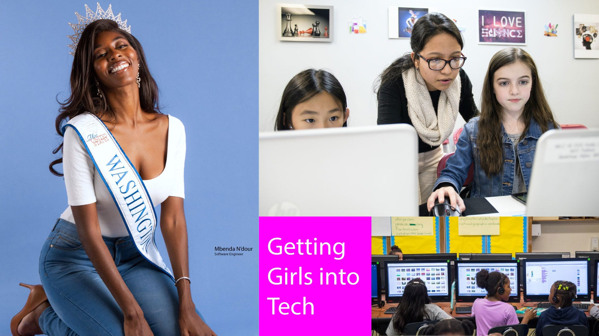
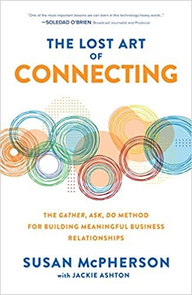

Getting Girls into Tech


Getting girls into tech is something that Mbenda Ndour is most passionate about and like her other person like you are also. It’s important for girls to get into STEM, we all agree that getting more girls into tech is important for the world and more for the tech industry because we will get more opportunities if we do. Opportunities born from connecting people and ideas and the tech-mediated era into which we are living in connecting is more important than networking.
By writing this article all I am trying to do is to be generous by writing about other great human beings and hoping that connections can come from these cheap words I am spending right now.
Connecting women like Mbenda, Deanna, Sarah, and You and highlighting the amazing works and achievements that they have done could help girls around the world see the space of possibilities for them. Connecting these tech and angel women and empowering them will for sure expand the space of possibilities for girls to get into tech.
Mbenda may know this adage from my born country that says: what one hand can do, two are better at it. Connection is exponential, Mbenda alone can do a lot of good things for getting girls into tech but she will be exponentially more able to do if she is connected to someone like Sarah or you, and why not every one of us.
Mbenda is showing in her everyday life that girls can, by working and achieving in men crowded tech environment and share advice. Sarah is doing the same but together they could only do better of what each one of them is doing alone.
For my part, I am learning as I always want to do to know how to connect people and make them do more of the good things they are doing for us. There is always someone out there who can teach us the things that we want to learn and I am glad to have after Mbenda and Sarah and Deanna, Susan McPherson who is the author of this worth reading book.

But writing is the only thing that I can already do connecting people and ideas.
PS: still measuring the insight we are getting from the Greyio experiment.